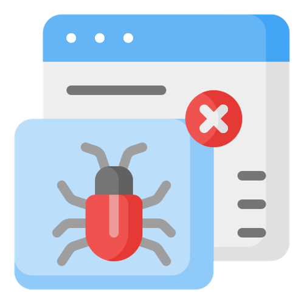
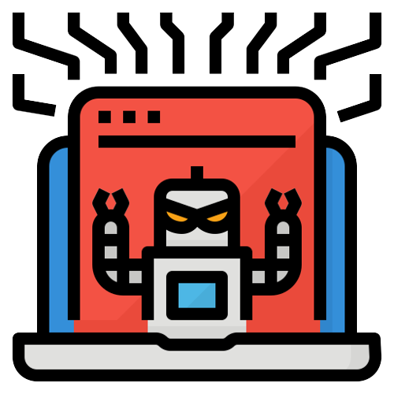

6. Adware
Adware, short for advertising-supported software, is a type of software that displays unwanted advertisements on a user's computer or device. Unlike malicious malware, adware is not necessarily harmful or designed to cause damage to the system. Instead, its primary purpose is to generate revenue for its developers by displaying ads to users. Adware displays unwanted advertisements to users. While not as harmful as other types of malware, it can be annoying and disruptive.
Here's how adware typically works:
1.Installation: Adware is often bundled with free software or applications that users download and install from the internet. When users install the desired software, the adware may also be installed alongside it without the user's explicit consent.
2. Advertisement Display: Once installed, the adware monitors the user's web browsing activities and displays targeted advertisements based on the collected data. These ads can appear as pop-ups, banners, in-text ads, or even full-page ads.
3. Revenue Generation: Adware developers earn money through various methods, such as pay-per-click (PPC) or pay-per-view (PPV) models. Each time a user clicks on an ad or views it, the developers receive a small payment from the advertisers.
While adware may not be inherently malicious, it can still be unwanted and intrusive to users. It can slow down system performance, consume internet bandwidth, and make the browsing experience unpleasant. Additionally, some adware may track users' online activities more extensively than necessary for advertising purposes, raising privacy concerns.
In some cases, adware may cross the line into potentially unwanted programs (PUPs) when it exhibits aggressive advertising practices or alters the user's browser settings without their consent. Adware that goes beyond merely displaying ads and starts redirecting users to potentially harmful websites or promoting dubious products can be particularly problematic.
To protect against adware and potentially unwanted programs:
1. Be cautious when downloading and installing software from the internet. Stick to reputable sources and avoid downloading from unfamiliar or untrustworthy websites.
2. During software installations, choose the custom or advanced installation options when available, and carefully review all components included in the installation package to avoid unwanted extras.
3. Use reputable antivirus and anti-malware software that can detect and remove adware and potentially unwanted programs.
4. Keep operating systems, software, and browsers up to date with the latest security patches to reduce vulnerabilities that adware might exploit.
5. Consider using browser extensions or add-ons that block ads if you prefer an ad-free browsing experience.
By being vigilant and employing these measures, users can minimize the risk of adware and maintain a smoother and safer computing experience.

7. Rootkits
A rootkit is a type of malicious software (malware) that is designed to conceal its presence and activity on a computer or device. Rootkits get their name from the term "root," which is the highest-level user account in Unix-based operating systems (similar to the administrator account in Windows). When a rootkit gains access to this privileged level, it can gain control over the entire system and become very difficult to detect and remove. Rootkits are particularly stealthy and intrusive, often used by attackers to maintain unauthorized access to a compromised system, hide other malicious software, or cover up their tracks after a successful attack. They achieve this stealth by manipulating the operating system or modifying core system files, allowing them to bypass security mechanisms and stay hidden from traditional antivirus and anti-malware tools. Rootkits are designed to hide the presence of malware on a system by modifying its core components or operating system.
There are two main types of rootkits:
1. User-mode Rootkits: These rootkits operate at the user level and have limited privileges compared to kernel-mode rootkits. They can modify certain user-level applications or system files, such as system libraries or configuration files, to hide their presence or modify the behavior of specific applications.
2. Kernel-mode Rootkits: Kernel-mode rootkits operate at the deepest level of the operating system, the kernel. By residing in this privileged space, they can intercept and manipulate system calls and data directly, giving them full control over the operating system. This makes them more powerful and harder to detect compared to user-mode rootkits.
Rootkits can be distributed through various means, such as infected software downloads, email attachments, or exploiting security vulnerabilities. Once installed, they can perform various malicious actions, such as stealing sensitive data, providing backdoor access for attackers, disabling security software, or modifying system files.
Detecting and removing rootkits is challenging because they use advanced techniques to hide their presence. Specialized rootkit detection tools and thorough system analysis are often required to identify and remove them effectively. Regularly updating software and operating systems, using reputable security software, and practicing good security habits can help minimize the risk of rootkit infections and other malware attacks.